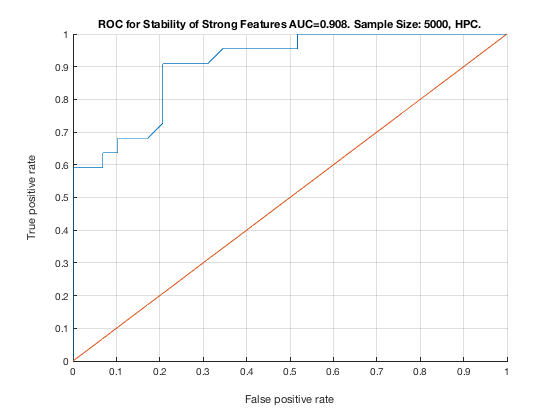

% TieNet. Sample Size: 5000. HPC. unit_stability_type(5000, 1, "TieNet")
Table 9. Stability by Type. Sample Size: 5000, HPC.
____________________________________________________
SELECTED COUNTS: Strong:=22, Weak=25, Irrelevant=4
TOTAL COUNTS: Strong:=23, Weak=26, Irrelevant=4
Feature_Number Stability Type Path_Length N_MBS
______________ _________ ____________ ___________ _____
23 ' 0.600 ' ' STRONG ' 3 0
20 ' 0.574 ' ' STRONG ' 3 0
19 ' 0.278 ' ' STRONG ' 2 0
22 ' 0.246 ' ' STRONG ' 2 0
6 ' 0.232 ' ' STRONG ' 3 0
11 ' 0.194 ' ' STRONG ' 4 0
21 ' 0.154 ' ' STRONG ' 1 0
18 ' 0.146 ' ' STRONG ' 1 0
17 ' 0.130 ' ' STRONG ' 4 9
5 ' 0.118 ' ' STRONG ' 3 18
10 ' 0.106 ' ' STRONG ' 4 36
16 ' 0.076 ' ' STRONG ' 2 72
4 ' 0.068 ' ' STRONG ' 4 108
39 ' 0.066 ' ' weak ' 4 108
26 ' 0.060 ' ' weak ' 5 108
3 ' 0.056 ' ' STRONG ' 4 144
40 ' 0.054 ' ' weak ' 3 144
9 ' 0.052 ' ' STRONG ' 3 216
35 ' 0.048 ' ' weak ' 7 216
28 ' 0.046 ' ' weak ' 5 216
15 ' 0.042 ' ' STRONG ' 3 324
37 ' 0.042 ' ' weak ' 6 324
14 ' 0.040 ' ' STRONG ' 3 432
13 ' 0.038 ' ' STRONG ' 2 540
2 ' 0.036 ' ' STRONG ' 2 675
7 ' 0.034 ' ' STRONG ' 1 900
27 ' 0.032 ' ' weak ' 6 900
32 ' 0.032 ' ' weak ' 8 900
38 ' 0.030 ' ' weak ' 5 900
8 ' 0.028 ' ' STRONG ' 2 1125
24 ' 0.028 ' ' weak ' 4 1125
43 ' 0.026 ' 'irrelevant' Inf 1125
46 ' 0.026 ' ' weak ' 7 1125
29 ' 0.022 ' ' weak ' 11 1125
47 ' 0.022 ' 'irrelevant' Inf 1125
30 ' 0.020 ' ' weak ' 10 1125
12 ' 0.018 ' ' STRONG ' 1 1350
36 ' 0.014 ' ' weak ' 8 1350
45 ' 0.014 ' ' weak ' 7 1350
25 ' 0.012 ' ' weak ' 6 1350
31 ' 0.010 ' ' weak ' 9 1350
41 ' 0.008 ' ' weak ' 3 1350
50 ' 0.008 ' ' weak ' 5 1350
53 ' 0.006 ' ' weak ' 5 1350
48 ' 0.004 ' ' weak ' 6 1350
49 ' 0.004 ' ' weak ' 6 1350
52 ' 0.004 ' ' weak ' 4 1350
33 ' 0.002 ' ' weak ' 8 1350
42 ' 0.002 ' 'irrelevant' Inf 1350
44 ' 0.002 ' 'irrelevant' Inf 1350
51 ' 0.002 ' ' weak ' 4 1350
Figure 9. ROC for Stability of Strong Features AUC=0.908. Sample Size: 5000, HPC.
__________________________________________________________________________________
